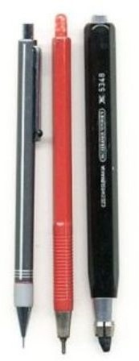
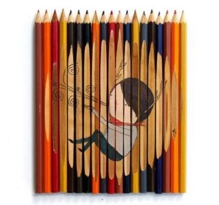
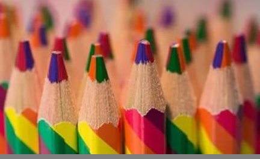
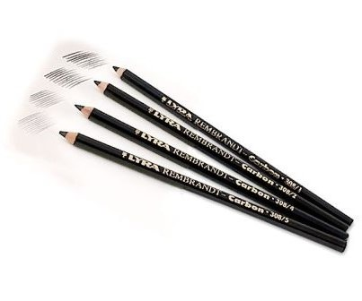
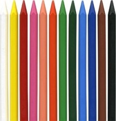
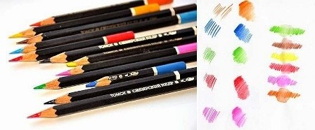
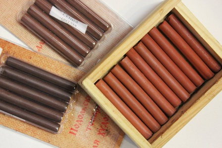

Карандаши принято делить на простые и цветные. Но существуют ещё твердые и мягкие, полупрозрачные и матовые, акварельные и пастельные, водорастворимые, графитные, а также цветные карандаши, консистенция которых напоминает воск.

Простые карандаши
Простой карандаш имеет графитовый грифель и пишет серым цветом с оттенками от светлого до почти чёрного (зависит от твёрдости графита). Новый одноразовый карандаш с деревянной оправой грифеля перед первым применением часто требуется заточить (очинить). Помимо одноразовых карандашей существуют многоразовые механические карандаши со сменными грифелями в постоянной оправе.
Карандаши различаются по твёрдости грифеля, которая, как правило, указана на карандаше и обозначается буквами М (или B — от англ. blackness (букв. чернота) — мягкий и Т (или H — от англ. hardness (твёрдость) — твёрдый. Стандартный (твёрдо-мягкий) карандаш обозначается сочетаниями ТМ или HB. Буква F (от англ.fine point(тонкость) – это средний тон между НВ и Н. Также нужно отметить, что тон у карандашей одной маркировки может меняться в зависимости от фирмы.Примеры работ
В отличие от Европы и России, в США для указания твёрдости используется числовая шкала.
Цветные карандаши
Цветные карандаши также имеют графитовый грифель только разных цветов от чёрного до белого и обычно деревянную оправу того же цвета, что и грифель карандаша.Но также существуют карандаши, у которых грифель двухцветный(См. рис.2). Цветные карандаши также делятся на неколько видов:
Рис. 1 Рис. 2 Рис. 3
- Угольные карандаши (См. рис.3)
Таким мягким материалом отлично рисуются объёмные и крупные произведения. Уголь добавляет картине нежности и мягкости, поэтому эти карандаши хорошо отображают полупрозрачность оттенков и яркость тонов. В использовании они просты, но в дальнейшем нуждаются в покрытии фиксирующим аэрозолем.Примеры работ
- Пастельные карандаши (См. рис.4)
Пастели, как в виде мелков, так и карандашей, очень популярны, поскольку это отличный материал для создания мелких деталей и контуров в рисунке. Кроме того, ими отлично делается фон (мелками). Очень просты в использовании.Примеры работ
Рис. 4 Рис. 5 Рис. 6- Акварельные карандаши (См. рис.5)
Этими карандашами до сих пор создают невероятные шедевры. Многие начинающие художники начинают рисовать именно с акварельных карандашей (растворимых), хотя есть и сухой вид. Именно сухими акварельными карандашами можно добиться выразительной четкости и импрессивности рисунка. Чтобы достичь максимальной яркости достаточно рисовать этим карандашом толстыми слоями. Примеры работ
- Сангина (См. рис.6)
Этот материал практически схож с углем. Самое основное её отличие - это устойчивость на шероховатой бумаге, картоне и холсте. Цвет сангины имеет красно-коричневые тона, за счет чего каждый рисунок будет красочный и теплый.Примеры работ